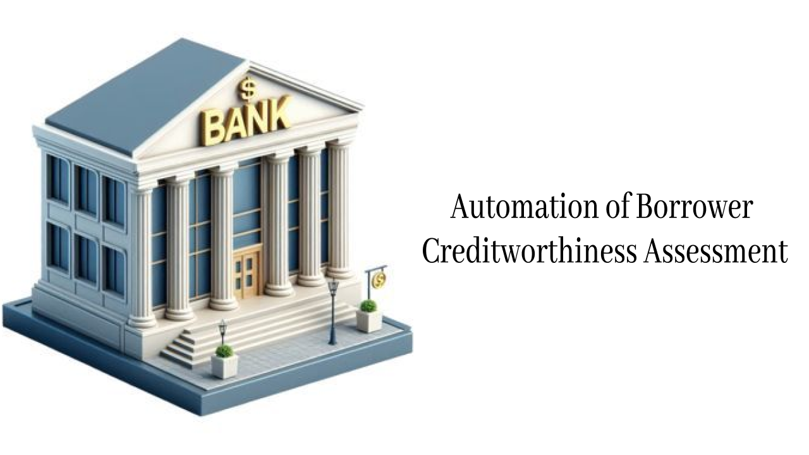

Projects
Adele Spotify Data Analysis

In this project, I undertook a comprehensive analysis of Adele’s discography to uncover trends and insights within her music catalog. The project involved several key steps:
Data Acquisition
I began by setting up Spotify for Developers to access the necessary data. I then wrote custom code to fetch detailed information about Adele’s songs, including attributes like popularity, album, and release dates.
Database Integration
The next step involved connecting an SQL database to my Python environment. This setup allowed for efficient storage and retrieval of data, ensuring a smooth workflow for analysis.
Data Analysis
Using Python, I conducted in-depth analysis to explore various aspects of the dataset. This included examining song popularity trends, thematic elements within titles, and album-specific patterns.
Visualization
To effectively communicate my findings, I created a dynamic Power BI dashboard. The dashboard features a range of visualizations, including bar charts, treemaps, and pie charts, providing a clear and interactive view of the analysis results.

The dashboard visualizes Adele's discography on Spotify, providing insights into track popularity, audio features, and album trends. Key metrics such as average popularity, danceability, energy, and track duration are broken down by album using bar charts, pie charts, and treemaps. Interactive filters allow users to explore changes across release dates, offering a dynamic and user-friendly experience.
Tools Used
Spotify for Developers (for data access)
Python (for data fetching and analysis)
SQL Database (for data management)
Power BI (for visualization)
This project not only highlights the analytical capabilities but also demonstrates the integration of various tools to create a cohesive and informative dashboard that offers valuable insights into Adele's music.
Automation of Borrower Creditworthiness Assessment
 See MoreAs my diploma project, this work focuses on developing a comprehensive system to automate the assessment of a borrower’s creditworthiness. The project integrates traditional FICO score calculation based on detailed financial data with advanced machine learning–based prediction models. By combining these approaches, it aims to provide lenders with a faster, more objective, and data-driven method for evaluating the likelihood of loan repayment.
Data generation
To initiate the project, I generated a synthetic dataset using Python libraries such as pandas and numpy. This allowed me to simulate realistic data tailored to the analysis objectives and ensured full control over its structure and variability.
Model creation
I implemented a Random Forest model using scikit-learn. The data was split into training, validation, and testing sets to ensure proper model development and evaluation. The model was trained on the training set, tuned using the validation set, and finally evaluated on the testing set to assess its generalization performance.
Interface creation
To make the model interactive and user-friendly, I deployed it using Streamlit, allowing users to input data and receive real-time predictions through a simple web interface.
Tools used
Python (main language)
Pandas, NumPy – data processing & analysis
Scikit-learn – machine learning model training
Streamlit – interactive web app interface
Contact
Email: meriehpetrosian03@gmail.com
GitHub: github.com/petrosyanmeri
LeetCode: leetcode.com/merrieh
LinkedIn: linkedin.com/in/meripetrosyan